Next: Conclusions
Up: A rational approximation for
Previous: The low mass transfer
Contents
Other low mass transfer rate limits
If, following Spalding (1960, 1963),  had been used
as the small parameter in the low mass transfer rate limit, the set of
governing equations (6.16)-(6.19)
would have been identical, since
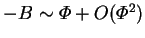 as
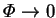, by
(6.7). The equations of chapter 2 could also
have been written more compactly, since
had been used
as the small parameter in the low mass transfer rate limit, the set of
governing equations (6.16)-(6.19)
would have been identical, since
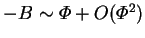 as
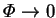, by
(6.7). The equations of chapter 2 could also
have been written more compactly, since  more often appears there
in the form (6.1). Then, however, would have been the driving
force in the definition of the Sherwood number (Spalding 1963, p. 38).
more often appears there
in the form (6.1). Then, however, would have been the driving
force in the definition of the Sherwood number (Spalding 1963, p. 38).
In either low mass transfer rate limit, the narrow cavity mass fraction
profile would be given by (4.34), and so the Sherwood
number (6.21) would have the value unity. If the dimensional
vapour transport rate were to be calculated from this, with as the
driving force, the result would be
 |
(6.25) |
Successive approximations would add further terms in the (absolutely
convergent) asymptotic series
but this is simply (6.5), since the series is just
the Maclaurin expansion for in terms of . Thus, using
instead of leads to one of those happy instances of the
telescoping of terms of an asymptotic series by transformation of the
perturbation quantity (for other examples, see Van Dyke 1975,
pp. 22-3, 244); in this case an infinity of terms
becomes one. The practical benefit of the collapse of the series is
that described in §6.1.2: the first approximation,
i.e. that obtained from the solution of the low mass transfer limit
equations (6.16)-(6.19), is
either exact, in the narrow cavity limit, or very close to it, for the
square cavity cases considered in §6.1.3. If had
been used, the first term would have differed by the mass transfer
rate correction factor
(6.6).
Another advantage of over is its symmetry properties.
Recall the transformation of §2.6.3. The condition for
invariance on the mass transfer rate factor was
 |
(6.27) |
or
 |
(6.28) |
Since this transformation is merely that of looking at the cavity from
behind rather than from in front, the simple odd parity of the mass transfer
rate factor seems more satisfying than the more complicated
(6.28).
Associated with
this is the fact that the physically significant range of is 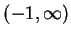,
whereas
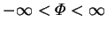. In general, for equal but opposite values
of , similar but reversed behaviour can be expected; whereas positive
and negative values of must be compared with (6.28) in mind.
Further, one would quite naturally expect the dimensional mass transfer
rate to be an odd function of its driving force, and this is the case if
is used; however, inspection of (6.26)
shows that fails this test for the narrow cavity limit.
The simplest function of with the
required parity properties is
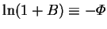.
The energy transfer rate is not an odd function of the driving force
implicit in the definition of the
Nusselt number (2.64), although it is an odd function of the
temperature difference. The chosen form of the Nusselt number
is preferred in spite of this
because of its reduced dependence on  (§6.1.3).
(§6.1.3).
In a brief remark on page 156 of his book, Spalding (1963) came close to
questioning the utility of his driving force, , noting in particular the
fact that the ratio of the dimensional mass transfer rate to , i.e. the
`conductance' or `mass transfer coefficient', depended on . On page 159,
the use of is mentioned as a simplifying alternative. This option
has been wholly adopted in the present work.
If the mass fraction difference were employed instead of or ,
it would be very difficult to calculate the higher approximations, since
the transpiration boundary condition cannot be written in terms of it alone;
the reference mass fraction,  , is also required. Consider, for
example, (2.59) for the simple case 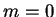,
, is also required. Consider, for
example, (2.59) for the simple case 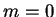,
The mass transfer rate factor, , can be developed in a double power
series:
thus, if
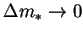 and
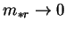, then
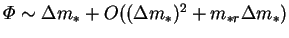.
In other words, the
mass fraction difference is an acceptable approximation for the driving
force only if it and the reference mass fraction level are small; i.e. if the vapour is everywhere dilute. Using  as driving force
in the Sherwood number, the calculated dimensional vapour transport rate
would vary by the factor,
as driving force
in the Sherwood number, the calculated dimensional vapour transport rate
would vary by the factor,
or the same mass transfer correction factor encountered for increased
by the factor
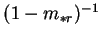. Further disadvantages of the use of the
mass fraction difference are discussed by Spalding (1963, p. 66 f.). The
most serious problem here is that in order to obtain higher approximations,
the reference mass fraction level must be introduced as a extra parameter.
These fairly obvious considerations notwithstanding, many authors have
employed the mass fraction difference as the driving force for mass transfer
(e.g. Rohsenhow & Choi 1961, p. 385;
Bejan 1985; Prata & Sparrow 1985; Nunez & Sparrow 1988;
McBain 1995, 1997b).
Next: Conclusions
Up: A rational approximation for
Previous: The low mass transfer
Contents
Geordie McBain
2001-01-27